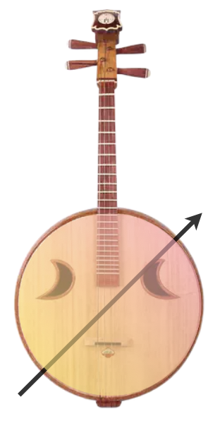
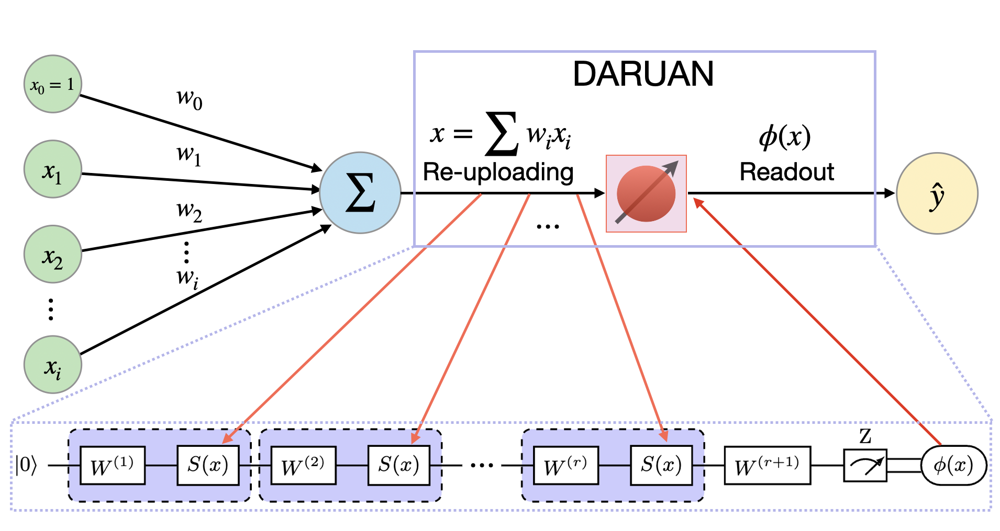
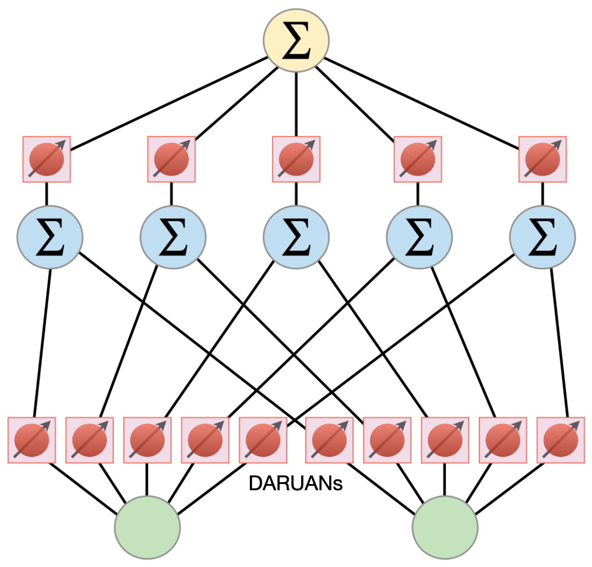

First Glance at QKAN and DARUAN
Quantum-inspired Kolmogorov-Arnold Network (QKAN) is a novel approach to integrate the concept of Quantum Variational Activation Function (QVAF) into KANs. We use single qubit data reuploading circuit as a quantum-inspired activation function, DatA Re-Uploading ActivatioN (DARUAN), to enhance the expressivity of KANs.
DatA Re-Uploading ActivatioN (DARUAN)
While the word daruan may evoke the traditional Chinese string instrument, in our context, DARUAN refers to a quantum-inspired activation function derived from the concept of data re-uploading circuits.
DARUAN leverages the architecture of data re-uploading to build a scalable and expressive quantum variational activation layer. Each block consists of fixed data encoding interleaved with trainable unitaries, forming a variational circuit capable of approximating both smooth periodic and non-periodic functions.
The circuit outputs the expectation value of a Pauli observable (typically \(\sigma_z\)), which is used as the nonlinear transformation (activation) applied to the neuron’s input.
In the figure below, DARUAN acts as a variational activation function (VAF) within a perceptron. Classical data is re-uploaded multiple times into the quantum circuit, and the final output is obtained via measurement:
Layer Extension Mechanism
A key feature of DARUAN is its architectural flexibility through what we call layer extension—a mechanism that progressively increases the number of re-uploading repetitions (or depth of the variational circuit). This enables the model to:
Scale its expressivity on demand
Retain and refine previously learned features
Avoid catastrophic forgetting during deeper training
Practical Advantages
Hardware-efficient: Implemented using only single-qubit rotations and measurements
NISQ-compatible: Suitable for near-term quantum devices
Expressive: Capable of approximating a wide class of functions with minimal depth
DARUAN demonstrates that simple quantum-inspired modules can serve as powerful building blocks for classical or hybrid neural networks, bridging ideas from variational quantum algorithms and modern machine learning.
Quantum-Inspired Kolmogorov–Arnold Networks (QKAN)
Building upon the foundational ideas of Kolmogorov–Arnold Networks (KANs) and the expressive capacity of the DARUAN activation function, we introduce the Quantum-Inspired Kolmogorov–Arnold Network (QKAN).
In QKAN, the traditional B-spline-based activation functions used in KAN are replaced by single-qubit data re-uploading variational quantum circuits (DARUAN), providing a compact and highly trainable nonlinear transformation.
Motivation and Principle
The key insight of QKAN is to leverage the Fourier-like expansion behavior of quantum data re-uploading circuits, which approximate target functions through tunable superpositions of sinusoidal frequency components.
While classical KANs express nonlinearities using B-spline basis functions (requiring a grid size \(G\)), QKAN approximates similar functional forms by estimating Fourier coefficients through a parameter-efficient quantum circuit with only a small number of re-uploading repetitions \(r\).
This makes QKAN especially attractive in settings where parameter and memory efficiency are critical.
Architecture
Each layer in QKAN is a feedforward structure composed of independent DARUAN modules. For a layer \(\ell\) with \(n_\ell\) input nodes and \(n_{\ell+1}\) output nodes, the layer is defined as:
Here:
\(U(x; \boldsymbol{\theta})\) is a data re-uploading unitary parameterized by \(\boldsymbol{\theta}\),
\(M\) is the Pauli observable (e.g., \(\sigma_z\)) used for measurement,
Each \(\phi_{\ell,j,i}\) acts as a nonlinear activation between nodes \(i\) and \(j\).
The full QKAN model is then composed by sequentially stacking these layers:
Because each quantum expectation value lies in the range \([-1, 1]\), the output at layer \(\ell+1\) is bounded within:
To extend the bounded output to a desired range, some post activation transformation (e.g., FCN or linear weight/bias layer) can be applied.
QKAN introduces a quantum-inspired activation mechanism into a Kolmogorov–Arnold framework, leading to:
High expressive power through tunable quantum feature maps
Strong parameter efficiency compared to B-spline KANs
Seamless integration with both classical and hybrid neural architectures
QKAN merges insights from function approximation theory, Fourier analysis, and quantum variational circuits, offering a promising path forward for expressive, scalable, and hardware-efficient learning models.
Example: Training a QKAN Model for Function Approximation
This section provides a minimal example of how to train a QKAN model using the DARUAN activation function, and how to visualize the learned nonlinearities.
[1]:
import torch
from qkan import QKAN, create_dataset
device = "cuda" if torch.cuda.is_available() else "cpu"
# f(x,y) = exp(sin(pi*x)+y^2)
f = lambda x: torch.exp(torch.sin(torch.pi*x[:,[0]]) + x[:,[1]]**2)
dataset = create_dataset(f, n_var=2, device=device)
model = QKAN(
[2,5,1],
reps = 3,
device=device,
preact_trainable=True, # enable flexible fourier frequency
postact_bias_trainable=True, # extend output bound
postact_weight_trainable=True, # extend output bound
ba_trainable=True, # enable residual connection for better convergence
save_act=True, # save activation for visualization
)
optimizer = torch.optim.LBFGS(model.parameters(), lr=1.)
model.train_(dataset, optimizer=optimizer, steps=20)
model.plot(from_acts=True, metric=None)
100%|█████████████| 20/20 [00:04<00:00, 4.42it/s, train loss=2.7591048e-05, test loss=2.865495e-05]
We also demonstrate how to apply pruning, a technique originally proposed in the KAN paper, to reduce the number of active nodes and simplify the model without sacrificing performance.
[2]:
model.prune(node_th=0.5)
model.plot(dataset["train_input"], mask=True)
[3]:
new_model = model.prune(node_th=0.5)
new_model(dataset['train_input'])
new_model.plot(from_acts=True, metric=None, in_vars=["$x$", "$y$"], out_vars=["$\exp(\sin(\pi x)+y^2)$"])
From the trained activation plots, we can infer the underlying structure of the learned function. In this example, the QKAN model, with minimal architecture, successfully recovers the form of the target function \(f(x,y) = \exp(\sin(\pi x)+y^2)\).
Further Reading
If you are interested in learning more about QKAN and DARUAN, please read our paper: “Quantum Variational Activation Functions Empower Kolmogorov-Arnold Networks”.